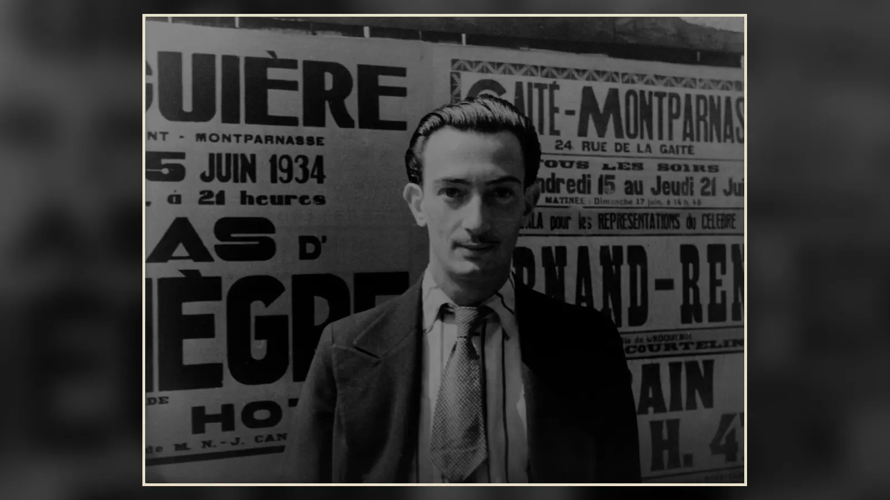
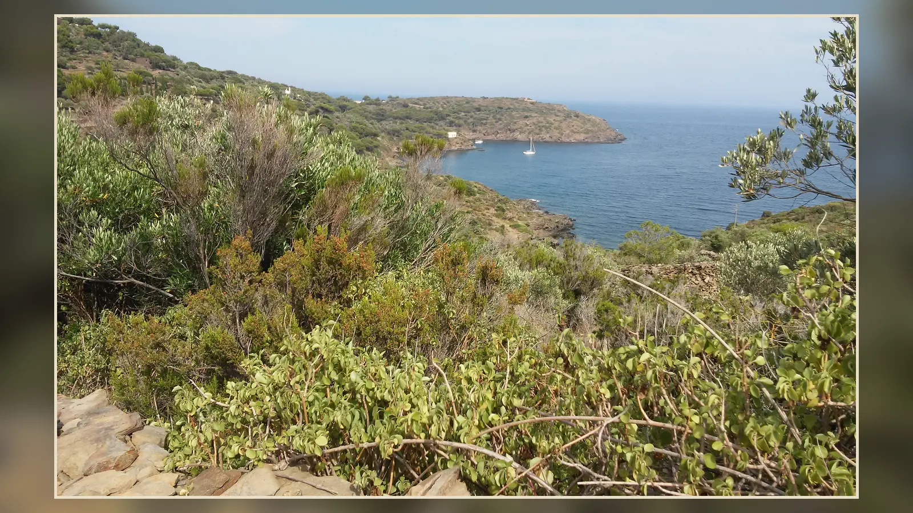
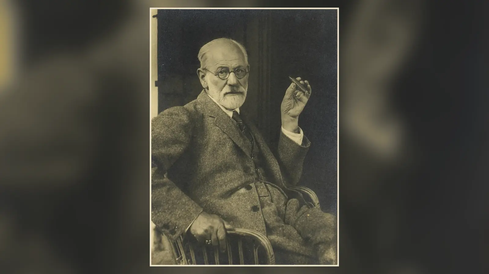
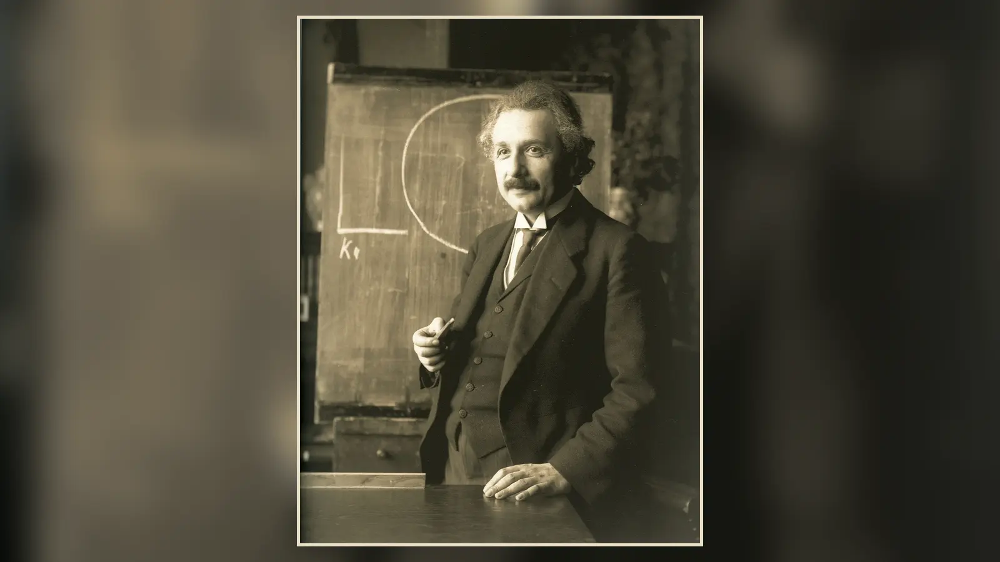

Salvador Dalí, Belleğin Azmi’nde zamanı gösteren saatleri işlevsiz, yumuşak nesnelere dönüştürür. Bu küçük tablo; bellek, rüya, çürüme, öznel zaman ve gerçeklik algısı arasında kesin bir cevaba indirgenemeyen güçlü bir gerilim kurar.
Küçük, neredeyse insansız bir kıyı manzarası. Ufukta ışık alan sarp kayalıklar, ön planda karanlık bir zemin, kurumuş bir ağacın dalından sarkan saat, başka bir saatin üzerine çöktüğü tanımlanması güç etsi bir figür ve karıncaların sardığı kapalı bir cep saati görülür. Nesneler, gerçek dünyada karşılaşılabilecek kadar titizlikle resmedilmiştir; fakat davranışları gerçekliğin kurallarına uymaz. Metalden yapılmış olması gereken saatler bez, deri ya da güneşte unutulmuş yumuşak bir yiyecek gibi sarkar. Katı ve ölçülebilir olduğunu düşündüğümüz zaman, Salvador Dalí’nin elinde neden biçimini kaybetmektedir?
1931 tarihli The Persistence of Memory, Türkçede yaygın olarak Belleğin Azmi adıyla bilinir. Eserin resmî adında saatlerden söz edilmemesine rağmen eriyen saatler öylesine baskın bir görsel simgeye dönüşmüştür ki tablo gündelik dilde “Eriyen Saatler” diye anılır. Bu lakap, resme ilk bakışta görülen tuhaflığı yakalar; ancak eserin düşünsel alanını daraltır. Çünkü Dalí’nin önümüze koyduğu mesele yalnızca saatlerin neden yumuşadığı değildir. Saatin ölçtüğü zaman ile insanın hatırladığı, beklediği, rüyasında yaşadığı ya da kaybettiği zaman arasındaki fark da tablonun merkezindedir.
“Eriyen saatler neyi simgeliyor?” sorusuna verilebilecek en sağlam kısa cevap şudur: Dalí, mekanik zamanın sertliğini ve güvenilirliğini bozarak zamanın insan deneyiminde sabit, tek biçimli ve dokunulmaz olmadığını düşündüren bir görüntü yaratır. Rüya, bellek, bedensel çözülme, ölüm ve çürüme bu görüntünün etrafında farklı yorum katmanları oluşturur. Fakat bu cevap tek bir şifre gibi kullanılmamalıdır. Dalí’nin kendi açıklamaları, Sürrealizmin bilinçdışına ilgisi, resmin Katalonya’ya dayanan gerçek manzarası ve sanatçının “sert-yumuşak” karşıtlıkları birlikte düşünüldüğünde Belleğin Azmi, bir formülü resmeden illüstrasyondan çok daha karmaşık görünür.
Küçücük Bir Tuval Nasıl Bu Kadar Büyük Bir Etki Yarattı?
Belleğin Azmi 1931’de tuval üzerine yağlıboya olarak yapıldı ve bugün New York’taki Museum of Modern Art koleksiyonunda bulunuyor. MoMA’nın güncel eser kaydına göre yalnızca 24,1 × 33 santimetre ölçülerinde. Reprodüksiyonlarda ve ekranlarda sürekli büyütülerek görüldüğü için, eseri hiç karşısında görmemiş birinin büyük bir tuval olduğunu düşünmesi şaşırtıcı değildir. Oysa boyutları küçük bir kabin resmi ölçeğindedir. Dalí, anıtsal bir yüzeye ihtiyaç duymadan, birkaç santimetrelik saatleri 20. yüzyıl sanatının en tanınan imgeleri arasına sokmayı başarmıştır.
Bu küçüklük tablonun etkisine ters düşmez; tersine onu yoğunlaştırır. Dalí ayrıntıları gevşek ve belirsiz fırça darbeleriyle bırakmaz. Kayalıkların keskin kenarlarını, suyun dingin yüzeyini, ağacın kuru dalını, saatlerin metal parçalarını ve etsi figürün kirpiklerini dikkatle işler. Böylece imkânsız olan, kaba bir fantezi gibi değil, optik olarak ikna edici bir gerçeklik gibi karşımıza çıkar. MoMA küratöryel metinlerinin vurguladığı bu hipergerçekçi kesinlik, Sürrealist çelişkinin önemli bir parçasıdır: görüntü mantıksızdır ama resmediliş biçimi son derece mantıklıdır.
Eserin küçük ölçüsü aynı zamanda bakışı yakına çağırır. Uzakta görülen kayalıklarla ön plandaki saatler arasında kurulan perspektif, minyatür bir sahnenin içinde geniş bir boşluk duygusu yaratır. Resimde hareket eden insan kalabalıkları, mimari ayrıntılar ya da anlatıyı taşıyan bir olay yoktur. Sessizlik, nesnelerin tuhaflığı kadar önemlidir. Saatlerin zamanı ölçmesi beklenirken çevrede zamanı “kullanan” kimsenin bulunmaması, mekanik ölçüm aracını kendi başına bırakır. Zaman göstergeleri vardır; fakat gündelik hayatın ritmi yoktur.
1931’de Dalí: Sürrealizmin İçinde Yeni Bir Dil
Dalí 1929’da Paris’teki Sürrealist grupla yakın biçimde ilişki kurmuştu. Aynı yıl Gala ile tanışması hem kişisel hayatında hem kariyerinde belirleyici bir dönüm noktası oldu. Fundació Gala-Salvador Dalí’nin kayıtları, 1930’ların başında sanatçının giderek kendine özgü paranoiac-critical, yani paranoyak-eleştirel yöntemini geliştirdiğini gösterir. Belleğin Azmi bu dönüşümün erken ve güçlü ürünlerinden biridir. Dalí, Sürrealizmin bilinçdışı ve çağrışımla ilgisini kabul ederken bunu son derece kontrollü, eski ustaları hatırlatan bir resim tekniğiyle birleştirdi.
Bu nokta önemlidir, çünkü Sürrealizm bazen “ressamların rüyalarını resmetmesi” gibi fazla basit bir tanıma indirgenir. André Breton’un 1924 tarihli manifestosuyla kurumsallaşan hareket, akılcı denetimin sınırlarını aşmak, bilinçdışının ve arzunun üretici gücüne ulaşmak ve modern toplumun yerleşik gerçeklik anlayışını sarsmak istiyordu. Sigmund Freud’un rüyalar, bastırma, arzu ve bilinçdışı üzerine çalışmaları Sürrealistler için güçlü bir düşünsel kaynak oluşturdu. Ancak sanatçılar Freud’u aynı biçimde uygulamadılar. Otomatik yazıdan kolaja, rastlantısal tekniklerden son derece ayrıntılı figüratif resme kadar farklı yollar denediler.
Dalí’nin ayırt edici yönü, akıl dışı görüntüyü bulanıklaştırmak yerine olağanüstü bir kesinlikle görünür kılmasıydı. The Metropolitan Museum of Art’ın 1929 tarihli The Accommodations of Desire için yaptığı değerlendirme de onun gerçek dışı ve kaygı yüklü imgeleri neredeyse klinik bir titizlikle resmettiğine dikkat çeker. Bu özellik Belleğin Azminde doruğa ulaşır. Saatin sarkması fiziksel olarak imkânsızdır; fakat Dalí, saat kayışının ya da metal kapağın nasıl parlayacağını öylesine ikna edici resmeder ki göz gördüğünü reddetmek yerine imkânsızı geçici olarak kabul eder.
Gala’nın rolü de bu dönemin bağlamında unutulmamalıdır. Fundació Gala-Salvador Dalí, Gala’yı yalnızca “ilham perisi” etiketiyle sınırlandırmıyor; sanatçının çalışma düzenini, sergilerini, yayınlarını ve kariyerini organize eden temel bir ortak olarak değerlendiriyor. Çift, 1930’dan itibaren Port Lligat’ta yaşam alanlarını kurmaya başladı. Dalí’nin Katalonya kıyısıyla kurduğu bağ, Belleğin Azminin arka planında doğrudan görünür hâle gelecekti.

Sürrealist Bir Resim Neden Bu Kadar Gerçekçi Görünüyor?
Belleğin Azmini ilginç yapan çelişkilerden biri, düşsel içeriğin geleneksel resim becerisiyle aktarılmasıdır. Dalí perspektifi, ışığı, gölgeyi ve nesne yüzeylerini terk etmez. Tam tersine, bunları imkânsızlığı daha ikna edici göstermek için kullanır. Sert bir masa kenarından sarkan saat, nesnenin ağırlığını hissettirecek kadar gerçekçi gölgelenmiştir. Uzak kayalıklar ışık altında belirginleşirken ön plan karanlığa gömülür. Bu teknik karşıtlık, izleyicinin “Bu gerçek değil” diyerek görüntüden kolayca uzaklaşmasını engeller.
Dalí’nin eski ustalara duyduğu hayranlık da burada anlam kazanır. Fundació Gala-Salvador Dalí onun Rönesans ve Barok ustalarına, özellikle Raphael, Velázquez ve Vermeer’e tekrar tekrar döndüğünü belirtir. Dalí için teknik ustalık, modern sanatın reddetmesi gereken bir geçmiş kalıntısı değildi. Geleneksel yanılsama teknikleri, gerçekliği sabote etmek için kullanılabilirdi. Resmin yüzeyi güven verirken resmin içindeki dünya güveni bozar.
Bu nedenle Belleğin Azmi doğrudan bir rüyanın kopyası olarak görülmemelidir. Rüyayı andıran bir mantık vardır: tanıdık nesneler beklenmedik özellikler kazanır, ölçek ve işlev değişir, zaman hissi belirsizleşir. Fakat kompozisyon son derece bilinçli biçimde düzenlenmiştir. Dalí’nin resminde bilinçdışı ile teknik kontrol birbirinin karşıtı olmak zorunda değildir. Sürrealist etkinin önemli kısmı tam da bu iki düzlemin çarpışmasından doğar.
Tabloya Yakından Bakınca Ne Görüyoruz?
Resmin sol alt köşesinde turuncu-kızıl tonlu kapalı bir cep saati yer alır. Diğer saatlerin aksine erimemiştir; fakat yüzeyi karıncalarla kaplıdır. Biraz yukarıda sert, dikdörtgen bir yüzey bulunur. Bu yüzeyin kenarından mavi tonlu bir saat aşağı doğru sarkar. Saatin gövdesi sertliğini yitirmiş, kenara uyum sağlayarak bükülmüştür. Yakınında başka bir saat ve küçük bir sinek görülür. Kuru ağacın dalından sarkan bir başka yumuşak saat ise nesnenin metalden yapılmış olabileceği düşüncesini tamamen tersine çevirir.
Kompozisyonun merkezinde beyazımsı, etsi ve tanımlanması güç bir biçim vardır. İlk bakışta bir canlıya benzeyebilir; yakından incelendiğinde uzun kirpikler, kapalı bir göz, burun ya da yüz profili çağrıştıran parçalar seçilir. Üzerine bir saat örtülmüştür. Figür ne tam anlamıyla insandır ne de bütünüyle nesne. Bu belirsizlik, resmin en önemli görsel stratejilerinden biridir. MoMA, biçimi Dalí’nin profilini yaklaşık olarak çağrıştıran canavarımsı bir yaratık şeklinde değerlendirir; fakat “Dalí kesin olarak kendi yüzünü çizdi” demek eserin bilinçli belirsizliğini ortadan kaldırır.
Sağ tarafta manzara açılır. Uzakta sarı-altın tonlarında kayalıklar ve onların önünde sakin bir su yüzeyi görülür. Bu coğrafya bütünüyle hayal ürünü değildir. MoMA, uzak kayalıkları Dalí’nin memleketi Katalonya kıyısıyla ilişkilendirir; Fundació Gala-Salvador Dalí de Port Lligat ve Cap de Creus çevresinin sanatçının görsel dünyasındaki temel yerini vurgular. Dolayısıyla resimde iki gerçeklik üst üste gelir: tanınabilir Akdeniz coğrafyası ve fizik yasalarını terk etmiş ön plan.
Kuru ağaç, dikdörtgen blok, kayalıklar ve ufuk çizgisi biçimsel olarak serttir. Saatler ve merkezdeki bedenimsi biçim ise yumuşaktır. Dalí böylece yalnızca tuhaf nesneler yan yana getirmez; bütün kompozisyonu sertlik ve yumuşaklık arasındaki çatışmaya göre kurar. Resmin düşünsel gücünün önemli bir bölümü bu maddesel karşıtlıktan gelir.
Işık, Boşluk ve Sessizlik Anlamı Nasıl Değiştiriyor?
Eriyen saatler eserin ününü belirlemiş olsa da onları etkili kılan çevredeki boşluktur. Dalí, saatleri kalabalık bir oda, işleyen makineler ya da insanlarla dolu bir şehir içine yerleştirmez. Ön plandaki birkaç nesnenin ardından geniş bir boşluk açılır. Bu tercih, her nesneyi görsel olarak yalnızlaştırır. Saat yalnızca yumuşak değildir; onu kullanacak bir insanın bulunmadığı sessiz bir ortamda yumuşaktır. Karıncaların küçük hareketi dışında yaşam belirtisi sınırlıdır.
Işık da iki ayrı dünya duygusu yaratır. Uzak kayalıklar berrak ve sıcak bir ışık alırken ön plan daha koyu ve gölgeli görünür. Ufukta fiziksel dünya anlaşılır biçimde devam eder; yakında ise maddelerin kuralları bozulmuştur. Bu karşıtlık, rüya ile gerçeklik arasında basit bir sınır çizmez, çünkü “gerçek” Katalonya manzarası ile imkânsız nesneler aynı perspektif sistemi içinde kusursuzca birleşir. Dalí’nin teknik ustalığı tam burada devreye girer: iki alanın ışık ve mekân bakımından aynı resme ait olduğuna gözümüzü ikna eder.
İnsan yokluğu, eserin belleğe ilişkin yorumunu da farklılaştırır. Bellek normalde bir özne gerektirir; bir şeyleri hatırlayan biri vardır. Burada bu rolü üstlenecek açık bir insan figürü yoktur. Merkezdeki biçim Dalí’nin uyuyan yüzünü çağrıştırsa bile kimliği kararsızdır. Böylece “bellek” belirli bir kişinin anlatılmış anısı olmaktan çıkar, resmin tamamına yayılan zihinsel bir durum hâline gelir. İzleyici tabloya baktığında eksik öznenin yerini kısmen kendisi doldurur.
Bu sessiz yapı, Dalí’nin görüntüsünün neden yalnızca mizahi bir “eriyen saat” fikri olarak kalmadığını da açıklar. Camembert anekdotu tek başına düşünüldüğünde motif esprili görünebilir. Fakat aynı motif kurumuş ağaç, karıncalar, boş kıyı, uyuyan yüz ve uzun gölgelerle çevrelendiğinde ton değişir. Gündelik nesnenin komik dönüşümü huzursuz edici bir durgunluğa yerleşir. Resmin farklı yorumları da tam bu tonal belirsizlikten beslenir: aynı görüntü hem zekice, hem düşsel, hem de fanilik duygusuyla yüklü olabilir.
Eriyen Saatler Ne Anlatıyor?
Saat, modern dünyada zamanı soyut bir fikir olmaktan çıkarıp sayılara bölen araçtır. Dakika ve saat, iş programını, randevuyu, yolculuğu, üretimi ve gündelik düzeni belirler. Mekanik saat bu anlamda yalnızca zamanı göstermez; zamana düzen verir. Dalí’nin yaptığı ilk müdahale, bu düzen aracının fiziksel otoritesini yok etmektir. Kadran hâlâ saate benzer, fakat gövde artık kendi biçimini koruyamaz. Ölçüm cihazı vardır ama güvenilirliği görsel olarak çökmüştür.
Buradan “zaman görecelidir” sonucuna ulaşmak mümkündür, fakat tabloyu tek cümlede kapatmak için değil. İnsan deneyiminde beş dakika her zaman aynı uzunlukta hissedilmez. Beklerken uzayan, yoğun bir anda kısalan, rüyada sırasını kaybeden ve bellekte yıllar sonra yeniden biçimlenen zaman, saatin eşit aralıklarına uymaz. Belleğin Azminin yumuşak saatleri, nesnel ölçüm ile öznel deneyim arasındaki bu çatlağı görünür kılmaya elverişlidir.
Bellek bu noktada başlığın yardımıyla öne çıkar. Hatırlamak, geçmişi mekanik biçimde geri oynatmak değildir. Bellek seçer, siler, yoğunlaştırır, bağlam değiştirir ve farklı anları birbirine yaklaştırabilir. Saat zamanı düzenli bir çizgiye bölerken bellek bu çizgiyi yeniden şekillendirir. Bu nedenle eriyen saatleri “belleğin zamanı bükmesi” şeklinde okumak, eserin adıyla görsel yapısı arasında güçlü bir bağ kurar. Yine de Dalí’nin “tablonun kesin açıklaması budur” dediği bir formül değildir; sanat tarihsel bir yorumdur.
Saatlerin yumuşaması bedensel bir çağrışım da üretir. Metalin ete, deriye ya da yiyeceğe benzeyen bir maddeye dönüşmesi, mekanik olanı organik dünyanın içine çeker. Organik dünya ise yaşlanır, bozulur ve ölür. Böylece zamanı ölçen nesnenin kendisi zamana tabi hâle gelir. Saat artık dışarıdan dünyayı ölçen değişmez bir araç değil, çürüyebilecek bir beden gibidir. Karıncaların metal saati kaplaması bu dönüşümü daha da belirginleştirir.
Dalí’nin resminde bu yorumların birbirini dışlaması gerekmez. Rüya zamanı, bellek zamanı, bedensel çözülme ve mekanik düzenin kırılması aynı görüntüde üst üste binebilir. Eserin kalıcılığı da burada yatar: eriyen saat tek bir sembolik eşitliğe kapanmadığı için farklı dönemlerde yeni çağrışımlar üretmeye devam eder.
Zamanı Gösteren Saat ile Zamanı Yaşayan İnsan Arasındaki Fark
Tablonun merkezindeki düşünsel gerilimi daha iyi görmek için saatin ne yaptığına bakmak gerekir. Saat, zamanın kendisini üretmez; düzenli fiziksel süreçleri bir ölçeğe çevirerek zamanı sayılabilir hâle getirir. İnsan deneyimi ise bu sayısal düzene bütünüyle uymaz. Aynı uzunluktaki iki saatlik süre, bir bekleyişte son derece uzun, yoğun bir çalışmada şaşırtıcı derecede kısa hissedilebilir. Çocuklukta yıllar geniş bir alan kaplarken yetişkinlikte geçmiş dönemler bellekte sıkışabilir. Dalí’nin tablosu bu psikolojik olguların bilimsel şeması değildir, fakat mekanik ölçüm aracını biçimsizleştirerek nesnel ölçü ile yaşantı arasındaki farkı görünür düşünmeye elverişli hâle getirir.
Bu ayrım eserin adıyla daha da keskinleşir. Saat geçmişi saklamaz; yalnızca bir anda hangi zamanı gösterdiğini bildirir. Bellek ise geçmişi korumaya çalışırken onu yeniden kurar. Bir anının zihinde “kalması”, o anın değişmeden muhafaza edildiği anlamına gelmez. Bu nedenle başlıktaki “persistence”, görseldeki fiziksel çözülmeyle ilginç bir karşıtlık oluşturur. Saatler kalıcı biçimlerini yitirirken bellek, tam da dönüşerek sürme yeteneği sayesinde varlığını koruyor olabilir. Bu, Dalí’nin açıkça formüle ettiği tek doğru açıklama değil; başlık ile kompozisyon arasındaki ilişkiden doğan güçlü bir sanat tarihsel okumadır.
Resimde saatlerin hepsinin aynı durumda olmaması da önemlidir. Bazıları tamamen yumuşamış, biri ağacın dalına uyum sağlamış, biri etsi figürün üzerine kapanmış, kapalı olan ise sertliğini korurken karıncalarla kaplanmıştır. Eğer Dalí yalnızca “zaman eriyor” şeklinde tek bir görsel şaka yapmak isteseydi aynı motifin tekrar edilmesi yeterli olabilirdi. Bunun yerine zaman araçlarının farklı bozulma biçimleri gösterilir. Birinin maddesi çöker, diğerinin yüzeyi organik istilaya uğrar. Bu çeşitlilik, kalıcılık ve çözülme fikrini yalnızca saatin kadranına değil maddenin kendisine taşır.
Saatlerin gösterdiği değerlerin birbirinden farklı olması da resimde ortak ve merkezî bir zamanın bulunmadığı hissini güçlendirir. Bunun mutlaka özel bir şifreye karşılık geldiğini düşünmek için kanıt yoktur. Daha verimli olan, bütün kompozisyonun ortak bir ritimden yoksunluğunu fark etmektir. Güneş ışığı uzak kayalıkları aydınlatırken ön plan başka bir zamansal atmosferde gibidir; uyuyan figür gündelik bilincin dışında görünür; canlılar metal nesne üzerinde çalışırken manzara neredeyse hareketsizdir. Resim tek bir saatin yönetebileceği homojen bir dünya kurmaz.
Bu nedenle Belleğin Azmini modern insanın “zamana yetişememesi” hakkında yapılmış doğrudan bir toplumsal eleştiri gibi okumak da tarihsel açıdan aşırıya kaçacaktır. Dalí 1931’de akıllı telefon bildirimlerini, dijital takvimleri ya da bugünkü hız kültürünü öngören bir mesaj vermiyordu. Fakat başarılı sanat eserleri üretildikleri bağlamın dışındaki deneyimlerle ilişki kurabilir. Bugünkü izleyici, saatlerin otoritesinin bozulmasında kendi zaman baskısını görebilir; yeter ki bu çağdaş çağrışım, sanatçının belgelenmiş niyetiymiş gibi sunulmasın.
“Belleğin Azmi” Adı Neden Önemli?
İngilizce The Persistence of Memory başlığındaki “persistence” sözcüğü Türkçede tek bir karşılıkla tükenmez. “Azim” yerleşik çeviridir; fakat sözcük aynı zamanda sürme, devam etme, kalıcılık ve ısrar etme anlam alanlarını taşır. Bu nüans, tablonun ironisini güçlendirir. Görsel dünyada nesneler kalıcılıklarını kaybederken başlık belleğin sürmesinden söz eder.
Eğer eser yalnızca “Eriyen Saatler” diye adlandırılsaydı, bakışımız büyük olasılıkla fiziksel tuhaflığa kilitlenirdi. Belleğin Azmi ise zamanın ölçümü ile hatırlamanın sürekliliği arasında düşünsel bir alan açar. Saatler çözülürken bellek mi kalır? Yoksa belleğin kendisi de saatler gibi biçim değiştirerek mi sürer? Başlık bu soruların hiçbirini kesin biçimde cevaplamaz; onları mümkün kılar.
Burada “azim” sözcüğünü psikolojik bir motivasyon mesajına çevirmek de yanlış olur. Eser, “hafıza güçlüdür” gibi basit bir slogan sunmaz. Başlık ile görüntü arasındaki gerilim daha rahatsız edicidir: kalıcı olması beklenen ölçüler erirken, zihinsel olanın ısrarı devam eder. Bellek geçmişi korurken aynı zamanda onu değiştirir. Dalí’nin görüntüsü bu paradoksu açıklamaktan çok görünür hâle getirir.
Ortadaki Uyuyan Figür Dalí’nin Yüzü mü?
Merkezdeki figür, eserin saatlerden sonra en çok tartışılan unsurudur. Kapalı gözü andıran çizgi ve uzun kirpikler uyku izlenimi yaratır. Burun benzeri çıkıntı, dil ya da ağız çağrıştıran yumuşak biçimler ve genel profil, Dalí’nin kendi yüzünün deforme edilmiş bir versiyonu olarak yorumlanmıştır. MoMA’nın eser açıklaması da bu benzerliği kabul eder. Ancak figürün kesin bir otoportre olduğu sonucuna ulaşmak için bundan fazlası gerekir.
Dalí’nin 1929 tarihli The Great Masturbator gibi eserlerinde benzer şekilde yere doğru uzanan, büyük burunlu, gözleri kapalı amorf baş biçimleri bulunur. Bu tekrar, Belleğin Azmindeki figürü sanatçının kişisel ikonografisiyle ilişkilendirmeyi makul kılar. Fakat biçim aynı zamanda bir yüz, bir hayvan, bir uyuyan beden ve şekilsiz bir et parçası arasında gidip gelir. Figürün gücü, bu kimliklerin hiçbirine tamamen sabitlenmemesidir.
Üzerine yumuşak bir saatin örtülmesi de önemlidir. Eğer figür uyku hâlindeki bir benliği çağrıştırıyorsa, saat burada bilinçli gündelik zamanın rüya durumunda işlevsizleşmesini düşündürebilir. Uyurken saat işlemeye devam eder; fakat öznenin zaman deneyimi onun kadranına uymaz. Böyle bir okuma resmin rüya mantığıyla uyumludur. Yine de figürün “uyuyan Dalí ve onun rüyası” olduğunu kesin bir anlatıya dönüştürmek, kanıtın ötesine geçer.
Karıncalar ve Sinek Neyi Temsil Ediyor?
Dalí’nin sanatında karıncalar tek seferlik bir ayrıntı değildir. Daha erken eserlerinde de belirir ve çürüme, bozulma, kaygı ve organik maddenin parçalanmasıyla ilişkilendirilir. The Met, The Accommodations of Desire için karıncaları açıkça çürüme simgesi olarak tanımlar. Belleğin Azminde bu canlıların özellikle kapalı ve sert kalan saatin üzerine toplanması dikkat çekicidir. Diğer saatler fiziksel olarak yumuşamıştır; bu saat biçimini korur ama yüzeyi canlılar tarafından işgal edilir.
Bu düzenleme, “sert kalmak” ile “kalıcı olmak” arasındaki farkı düşündürür. Kapalı saat erimemiş olabilir, fakat bozulmadan kurtulmuş değildir. Karıncalar metal nesneyi çürüyen organik bir madde gibi ele geçirir. MoMA’nın yorumunda da metalin karıncaları çürümüş et gibi çekmesi vurgulanır. Böylece Dalí, mekanik nesne ile beden arasındaki sınırı bir kez daha bulanıklaştırır.
Sinek daha ihtiyatlı yorumlanmalıdır. Bir saatin yakınında görülen sinek, çürüme ve rahatsızlık çağrışımını güçlendirebilir; ışıkla ve gündelik yaşamın küçük istilalarıyla da ilişkilendirilebilir. Ancak Dalí’nin her sineğe sabit ve tek bir sözlük anlamı verdiğini varsaymak doğru değildir. Resimdeki işlevi, steril ve sessiz manzaranın içine canlı fakat huzursuz edici bir ayrıntı sokmasıdır. Karıncalar ve sinek birlikte düşünüldüğünde zaman araçları artık kusursuz makineler değil, doğanın döngüsüne açık maddeler hâline gelir.
Kuru Zeytin Ağacı ve Katalonya Kıyısı
Sol taraftaki kuru ağaç çoğu yorumda zeytin ağacı olarak tanımlanır. Zeytin, Akdeniz kültüründe yaşam, süreklilik ve barış gibi uzun bir sembolik geçmişe sahiptir; fakat Dalí’nin ağacı yapraksız ve kurudur. Bu geleneksel çağrışımları bilmek resimde bir gerilim görmemizi sağlayabilir, ancak “Dalí burada barışın ölümünü anlatıyor” gibi kesin bir alegori üretmek için yeterli değildir. Ağaç öncelikle kompozisyonun işlevsel bir parçasıdır: yumuşak saatin asılabileceği sert ve ölü bir dal sağlar.
Arka plandaki kıyı ise daha somut bir biyografik dayanağa sahiptir. MoMA, altın renkli kayalıkları Dalí’nin Katalonya kıyısıyla ilişkilendirir. Sanatçının Port Lligat ve Cap de Creus çevresiyle bağı çocukluğuna uzanır; Fundació Gala-Salvador Dalí, onun bu coğrafyayı resimlerini anlamak için vazgeçilmez gördüğünü aktarır. 1930’da Gala ile Port Lligat’ta küçük bir balıkçı kulübesi satın alması, bu manzarayla gündelik ilişkisini daha da güçlendirdi.
Bu gerçek coğrafyanın resimde bulunması Sürrealist etkiyi azaltmaz. Tam tersine, kayalıkların sertliği ve tanınabilirliği ön plandaki saatlerin imkânsızlığına bir ölçü sağlar. Uzak dünya taş gibi kalıcı görünürken yakın dünya çözülür. Işık alan kayalıklar zamanın jeolojik ölçeğini de çağrıştırabilir: insanın dakikaları ölçen saati karşısında milyonlarca yılda şekillenen kaya. Bu son ilişki yorum düzeyindedir, fakat kompozisyondaki sert-yumuşak ve yakın-uzak karşıtlığı tarafından desteklenir.

Freud, Rüya ve Bilinçdışı
Sürrealistlerin Freud’a ilgisi, Belleğin Azmini anlamak için gerçek bir tarihsel bağlamdır. The Metropolitan Museum of Art, hareketin rüya ve arzuya yoğun ilgisinin Freud’un yazılarıyla ilişkisini açıkça vurgular. Dalí de Freud’un düşüncelerini gençlik döneminden itibaren okudu ve bilinçdışı, arzu, kaygı, cinsellik ve çağrışım süreçlerini kendi görsel diline taşıdı.
Fakat kronoloji konusunda önemli bir yanlış sık tekrarlanır: Dalí, Belleğin Azmini Freud’la tanıştıktan sonra yapmadı. Tablo 1931 tarihlidir; Dalí Freud’la 19 Temmuz 1938’de Londra’da, Stefan Zweig ve Edward James’in aracılığıyla görüştü. Fundació Gala-Salvador Dalí’nin belgeleri bu tarihi açıkça verir. Dolayısıyla Freud’un düşünsel etkisi ile yüz yüze görüşme birbirine karıştırılmamalıdır.
Resimdeki uyku hâli, biçim değiştiren nesneler ve mantıksal ilişkilerin bozulması rüya deneyimini çağrıştırır. Ancak Dalí’nin amacı Freud’un belirli bir kavramını ders kitabı gibi resmetmek değildir. Rüya, onun için gündelik nesnelerin sabit anlamlarından kurtulabildiği bir alan sağlar. Saat metal olmak zorunda değildir; yüz yalnızca yüz olarak kalmak zorunda değildir; manzara aynı anda gerçek bir Katalonya kıyısı ve zihinsel bir sahne olabilir.
Bu nedenle tabloyu “Dalí bir gece bu rüyayı gördü ve sabah aynen resmetti” şeklinde anlatmak doğru değildir. Eser, bilinçli teknik kararların, sanatçının kişisel ikonografisinin, Sürrealist düşüncenin ve sonradan anlattığı yaratım hikâyelerinin birleştiği bir çalışmadır.

Paranoyak-Eleştirel Yöntem Ne Demek?
Dalí 1930’ların başında “paranoyak-eleştirel yöntem” adını verdiği yaklaşımı geliştirdi. Bu terim günümüzde klinik bir teşhis koymak için kullanılmamalıdır. Sanatçının kendi estetik teorisinde, gerçekliğin tek bir sabit okumasına bağlı kalmak yerine çağrışımlar aracılığıyla bir görüntünün içinde başka görüntüler ve anlamlar üretebilme sürecini anlatır. Fundació Gala-Salvador Dalí, yöntemi bilinçdışından gelen imgelerle bilinçli ve eleştirel biçimde çalışma yolu olarak açıklar.
Dalí’nin daha sonraki eserlerinde çift görüntüler bunun en belirgin sonucudur: bir biçim aynı anda iki farklı nesne olarak görülebilir. Belleğin Azmi bu yöntemin en gösterişli çift görüntü örneklerinden biri değildir, fakat aynı algısal kararsızlık burada da çalışır. Merkezdeki biçim hem yüz hem etsi bir yaratık gibi görünür. Saat hem metal bir mekanizma hem yumuşak bir deri gibi algılanır. Kıyı hem gerçek coğrafya hem zihinsel sahnedir.
Bu yöntem, izleyiciyi sembol sözlüğü aramaktan daha aktif bir konuma taşır. “Karınca eşittir ölüm, saat eşittir zaman” gibi sabit denklemler resmin etkisini açıklamaya yetmez. Dalí’nin görüntüsü nesnelerin kimliğini kararsızlaştırarak algının nasıl anlam ürettiğini de konu hâline getirir. İzleyici, resimde ne olduğunu çözmeye çalışırken kendi çağrışım mekanizmasının farkına varır.
Sert ve Yumuşak: Resmin Maddesel Mantığı
Dalí’nin dünyasında sert ve yumuşak arasındaki gerilim yalnızca biçimsel bir oyun değildir. Sert nesne sınırlarını korur, ölçülebilir ve güvenilir görünür; yumuşak nesne ise çevresine göre şekil değiştirir. Saatin işlevi için sertlik neredeyse zorunludur. Dişliler, kadran, kapak ve ibreler belirli bir düzen içinde çalışmalıdır. Dalí bu mekanizmayı parçalamadan saati işlevsizleştirir: onu yumuşatır.
Bu müdahale çok etkilidir çünkü saat hâlâ tanınabilir durumdadır. Dalí onu yok etseydi yalnızca zaman aracının ortadan kalktığını görürdük. Oysa eriyen saat, işlevini kaybetmiş hâlde varlığını sürdürür. Zamanı ölçmek için tasarlanmış nesne, kendi maddesini bile koruyamaz. Böylece ölçüm otoritesi gülünç ve kırılgan hâle gelir.
Arka plandaki kayalıklar bu nedenle yalnızca dekor değildir. Onların sertliği, saatlerin yumuşaklığına karşı görsel bir kutup oluşturur. Kapalı cep saati de başka bir varyasyon sunar: sertliğini korur ama karıncalar tarafından kuşatılır. Resimde kalıcılığın tek bir biçimi yoktur. Sert olan çürümeye, yumuşak olan şekil kaybına açıktır.
Bu karşıtlık aynı zamanda beden ile makineyi birbirine yaklaştırır. Modern saat, hassas mekanizmanın simgesidir; Dalí onu organik madde gibi davranmaya zorlar. Bu dönüşüm, insanın zamanı dışarıdan kontrol ettiği düşüncesini tersine çevirir. Saat de dünya içindeki diğer maddeler gibi bozulabilir.
Zaman, Ölüm ve Çürüme
Belleğin Azmi doğrudan bir ölüm alegorisi değildir; yine de ölüm ve fanilik çağrışımlarını görmezden gelmek zordur. Karıncalar, sinek, kurumuş ağaç, boş manzara ve biçimini kaybeden nesneler, canlılığın ve maddi bütünlüğün geçici olduğu hissini üretir. Saatlerin varlığı bu hissi zaman kavramıyla bağlar.
Saat, ölümü durduramaz; yalnızca geçen süreyi ölçer. Dalí’nin saatleri ise bu görevi bile güvenle yerine getiremez. Kadranlar farklı yönlere bakar, gövdeler sarkar ve bir tanesi canlılar tarafından kaplanır. Böyle bakıldığında resim, zamanı kontrol etmek için geliştirdiğimiz aracın kendisinin de fanilikten muaf olmadığını gösteren bir ironiye dönüşür.
Fakat tabloyu “her şey ölür” cümlesine indirgemek de yetersizdir. Arka plandaki su ve kayalıklar dinginliğini korur. Işık hâlâ vardır. Belleğin “persistence”ı başlıkta devam eder. Resim, çözülme ile kalıcılığı aynı anda tutar. Ölüm çağrışımı bu nedenle eserin son sözü değil, zamanın ve maddenin güvenilirliğini sorgulayan daha geniş yapının bir parçasıdır.
Einstein’ın Görelilik Kuramı Eriyen Saatlerin Kaynağı mı?
İnternette Belleğin Azmi hakkında en sık tekrarlanan açıklamalardan biri, Dalí’nin eriyen saatleri Albert Einstein’ın görelilik kuramından esinlenerek yaptığıdır. Bağın neden çekici olduğu açıktır. 20. yüzyılın başında görelilik, zaman ve uzayın mutlaklığı hakkındaki gündelik sezgileri sarsmıştı. Dalí’nin katı saatleri yumuşatması da görsel olarak “zaman artık mutlak değil” fikrine olağanüstü uygun görünür.
Dalí’nin bilimsel gelişmelere ilgisiz olduğu da söylenemez. Fundació Gala-Salvador Dalí’nin bilim üzerine araştırması, sanatçının görelilik kuramından haberdar olduğunu ve gerçekliğin tek bir akışa indirgenememesi fikrine ilgi duyduğunu gösterir. Ancak buradan Belleğin Azminin Einstein’ın teorisini doğrudan resmetmek amacıyla yapıldığı sonucu çıkmaz. Eser için bunu kanıtlayan açık bir sanatçı beyanı bulunmamaktadır.
Dalí’nin yıllar sonra anlattığı yaratım hikâyesi farklıdır. The Secret Life of Salvador Dalí adlı otobiyografisinde yumuşak saat fikrini güçlü bir Camembert peynirinin yumuşaklığıyla ilişkilendirir. MoMA da bu anlatıyı aktarır ve Dalí’nin saatleri “zamanın Camembert’i” olarak nitelediğini belirtir. Bu açıklama, görelilik yorumunun sanatçının doğrulanmış tek niyeti olmadığını göstermesi bakımından önemlidir.
Yine de Camembert anlatısını “Einstein yorumu tamamen yanlıştır” demek için kullanmak gerekmez. Sanat eserinin anlamı yalnızca sanatçının ilk çağrışımına bağlı değildir. Görelilik, 20. yüzyılın zaman anlayışını dönüştüren büyük düşünsel bağlamlardan biridir ve izleyicilerin Dalí’nin saatlerinde bu dönüşümü görmesi anlaşılabilir. Ayrım şudur: “Tablo görelilikle ilişkilendirilebilir” demek yorumdur; “Dalí tabloyu Einstein’ın teorisini anlatmak için yaptı” demek ise kanıt gerektiren bir niyet iddiasıdır.

Camembert Hikâyesi Gerçek mi?
Dalí’nin kendi anlatısına göre bir akşam Gala arkadaşlarıyla sinemaya gitmiş, kendisi evde kalmıştı. Yemek masasındaki yumuşamış Camembert peyniri ona “süper yumuşak” imgeler düşündürmüş ve daha önce üzerinde çalıştığı Port Lligat manzarasına yumuşak saatleri ekleme fikri doğmuştu. Bu hikâye, eriyen saatlerin popüler tarihinin vazgeçilmez parçasına dönüştü.
Kaynağın Dalí’nin 1942’de yayımlanan otobiyografisi olması önemlidir. Olay 1931’e aittir; anlatı yaklaşık on yıl sonra, kendi kamusal kişiliğini son derece bilinçli biçimde kuran bir sanatçının kaleminden gelir. Bu yüzden hikâyeyi bütünüyle reddetmek için neden yoktur, fakat bağımsız bir günlüğün aynı günkü kaydıymış gibi kullanmak da doğru olmaz. Dalí kendisi hakkında etkileyici, teatral ve zaman zaman mit yaratıcı anlatılar kurmasıyla tanınır.
Camembert hikâyesinin asıl değeri, “resmin bütün anlamını peynir açıklıyor” sonucunda değildir. Hikâye Dalí’nin maddesel düşünme biçimini gösterir. Sert bir saat ile yumuşak peynir arasındaki beklenmedik çağrışım, Sürrealist yöntemin gündelik nesnelerin sabit kimliklerini bozma eğilimine uyar. Basit bir sofra gözlemi, resimde zamanın fiziksel niteliğini dönüştüren bir imgeye çevrilmiştir.
Resim Bir Rüyadan mı Doğdu?
Tablonun rüya atmosferi, onun doğrudan bir rüyanın kaydı olduğu düşüncesini beslemiştir. Oysa güvenilir kaynaklar Dalí’nin belirli bir gece gördüğü rüyayı aynen tuvale aktardığını doğrulamaz. Sanatçının Sürrealist çevreyle ilişkisi, Freud’a ilgisi ve bilinçdışına yönelik yöntemleri resmin rüyayla bağlantısını destekler; fakat “rüyadan kopya” ifadesi yaratım sürecini gereğinden fazla basitleştirir.
Dalí’nin tekniği zaten bunun tersini gösterir. Kompozisyonun perspektifi, ışık dağılımı, sert ve yumuşak biçimlerin dengesi ve ayrıntılı yüzeyler uzun bir görsel kontrol gerektirir. Rüya mantığı burada hammadde ya da model olabilir; resmin kendisi ise bilinçli bir yapıdır. Sürrealizm bilinçsizce resim yapmakla eş anlamlı değildir.
Bu ayrım, eserin izleyici üzerindeki etkisini daha iyi açıklar. Dalí, rüyayı taklit eden bulanık bir görüntü üretmez. Tam tersine, rüyadaki imkânsızlığın uyanıkken görülebilecek kadar keskin olmasını sağlar. Bu yüzden tablo rahatsız edicidir: göz ayrıntılara inanır, akıl nesnelerin davranışına inanamaz.
MoMA’ya Nasıl Geldi ve Nasıl Ünlendi?
Belleğin Azminin ünü yalnızca sanat tarihçilerinin daha sonra verdiği önemle oluşmadı. MoMA’nın sanatçı kaydına göre eser New York’taki ilk gösteriminde büyük ilgi gördü ve basında geniş biçimde yeniden üretildi. Julien Levy, Amerika’da Sürrealizmin önemli destekçilerinden bir galericiydi; Dalí’nin New York’taki görünürlüğünün artmasında önemli rol oynadı. MoMA’nın provenance kaydı, tablonun önce Galerie Pierre Colle’da bulunduğunu, ardından Julien Levy Gallery’ye geçtiğini ve 1934’te müzeye anonim bir bağış olarak girdiğini gösterir. Fundació Gala-Salvador Dalí’nin katalog kaydı, bağışı gerçekleştiren kişinin Helen Resor olduğunu belirtir.
Eserin New York sergilenme tarihleriyle ilgili kaynaklarda dikkat gerektiren bir ayrıntı vardır. MoMA’nın sanatçı biyografisi tablonun Ocak 1932’de New York’taki ilk sergilenmesinde büyük yankı yarattığını belirtirken, Fundació’nun catalogue raisonné kaydı New York Times’a dayanarak 21 Kasım–8 Aralık 1933’te Julien Levy Gallery’de sergilendiğini ayrıca kaydeder. Bunlar birbirini zorunlu olarak dışlayan kayıtlar değildir; eserin farklı New York gösterimleri söz konusudur. Yayına hazır bir metinde tek bir sergi tarihini bütün hikâyenin başlangıcıymış gibi kesinleştirmek yerine bu ayrımı korumak daha güvenlidir.
MoMA koleksiyonuna erken tarihte girmesi eserin dolaşımını güçlendirdi. 1936–1937’de müzenin dönüm noktası niteliğindeki Fantastic Art, Dada, Surrealism sergisi Sürrealizmin Amerika’daki kurumsal görünürlüğünü artırdı. Dalí’nin görüntüleri ise basın, fotoğraf, film, reklam ve popüler kültürle kurduğu ilişki sayesinde müze duvarlarının çok ötesine taşındı. Eriyen saatlerin biçimi kolayca tanınabilir, yeniden üretilebilir ve başka bağlamlara uyarlanabilir olduğu için modern görsel kültürde neredeyse bağımsız bir simgeye dönüştü.
Burada küçük boyut yeniden önem kazanır. 24,1 × 33 santimetrelik tablo, afişte, kitap kapağında, dergide ya da ekranda büyütüldüğünde ölçeğini kaybeder ama ikonografisini kaybetmez. Saatin sarkması tek bakışta tanınan bir işarettir. Bu görsel ekonomi, eserin popülerliğini açıklayan nedenlerden biridir. Benzer bir ikonlaşma süreci, Mona Lisa’nın neden bu kadar ünlü olduğu sorusunda da farklı tarihsel koşullarla karşımıza çıkar.
Belleğin Azmi ile Belleğin Azminin Dağılışı Aynı Eser mi?
Hayır. Dalí 1952–1954 yıllarında The Disintegration of the Persistence of Memory adıyla bilinen, Fundació Gala-Salvador Dalí kataloğunda The Corpuscular Persistence of Memory başlığıyla da kayıtlı ikinci bir eser yaptı. Bugün Florida’daki Dalí Museum koleksiyonunda bulunan bu tablo, 1931 kompozisyonunu hatırlatır fakat onu atom çağının düşünsel dünyasına taşır.
İkinci eserde tanıdık kıyı, saatler ve kompozisyon parçalanmış bir düzene dönüşür. Zemin düzenli bloklara ayrılır; nesneler askıda kalır; madde artık yalnızca yumuşamıyor, parçacıklara ve yapılara ayrılıyormuş gibi görünür. Bu değişim Dalí’nin II. Dünya Savaşı sonrasında atom fiziğine, nükleer çağın yarattığı sarsıntıya ve kendi “nükleer mistisizm” anlayışına yönelmesiyle ilişkilidir. Fundació’nun bilim araştırması, Hiroşima’ya atılan atom bombasının sanatçı üzerinde güçlü bir etki bıraktığını ve atomu sonraki düşüncesinin merkezlerinden birine yerleştirdiğini belgeler.
Bu nedenle ikinci tablo, ilkinin basit bir yeniden yapımı değildir. 1931’de katı zaman aracının yumuşamasıyla bozulan gerçeklik, 1950’lerde maddenin kendisinin parçalanmasıyla yeniden düşünülür. Dalí aynı ikonik kompozisyona dönerek kendi geçmişini de yeni bilimsel ve dinsel ilgileri üzerinden yeniden yorumlar.
Belleğin Azmi Hakkında Yaygın Yanlışlar
Eser hakkında dolaşan yanlış bilgilerin çoğu tamamen temelsiz değildir; genellikle gerçek bir ayrıntının aşırı kesinleştirilmesinden doğar. Örneğin Einstein bağlantısı, Dalí’nin bilime ilgisi ve resmin zaman algısıyla güçlü ilişkisi nedeniyle anlaşılırdır. Sorun, bu yorumu belgelenmiş yaratım amacı gibi sunmaktır. Benzer biçimde merkezdeki figür Dalí’nin yüzünü çağrıştırır; fakat bu, figürün yalnızca ve kesin olarak otoportre olduğu anlamına gelmez.
“Eriyen Saatler” adı da yanlış olmaktan çok popüler bir lakaptır. Eserin gerçek adı The Persistence of Memory’dir. “Rüyadan doğdu” ifadesi ise Sürrealizmin rüya ve bilinçdışı ilgisini, doğrudan biyografik bir olaymış gibi aktarır. Camembert hikâyesi Dalí’nin kendi otobiyografisinde bulunur; fakat bu da tablonun yalnızca peynir hakkında olduğu anlamına gelmez.
Boyut konusu daha basittir: eser büyük değildir. Reprodüksiyon kültürü onu zihnimizde büyütmüştür. Belleğin Azminin Dağılışı da aynı tablo değildir; yirmi yıldan fazla sonra yapılan, atom çağı bağlamında ilk kompozisyonu yeniden kuran ayrı bir eserdir. Bu ayrımları korumak, eseri daha az gizemli değil, daha ilginç hâle getirir; çünkü gerçek tarih, tek cümlelik internet açıklamalarından daha katmanlıdır.
Eriyen Saatler Neden Hâlâ Bu Kadar Etkileyici?
Saat 1931’de olduğu kadar bugün de gündelik hayatın güçlü bir düzenleyicisidir; yalnızca biçimi değişmiştir. Cep saatinin yerini telefon ekranları, dijital takvimler ve sürekli bildirimler almış olabilir, fakat zamanı bölme ve ölçme baskısı ortadan kalkmamıştır. Dalí’nin görüntüsünün çağdaş izleyicide karşılık bulmasının nedenlerinden biri, bu ölçüm düzenini tek bir basit hareketle işlevsizleştirmesidir.
Eriyen saat aynı anda hem tanıdık hem imkânsızdır. İnsan beyni nesneyi hemen tanır, ardından onun yanlış davrandığını fark eder. Bu kısa algısal çatışma, uzun bir sanat tarihi bilgisi gerektirmeden çalışır. Çocuk da saatin sarkmaması gerektiğini bilir; sanat tarihçisi de bu sarkmanın Sürrealizm, Dalí’nin kişisel ikonografisi, Freud, Port Lligat ve 20. yüzyılın zaman tartışmalarıyla ilişkisini açabilir. Eser farklı bilgi düzeylerinde etkisini korur; modern sanatın psikolojik gerilim üzerinden kurduğu başka bir güçlü örnek için Çığlık tablosunun anlamı da bu açıdan okunabilir.
Bellek de güncelliğini kaybetmeyen başka bir katmandır. İnsan geçmişi kronometre gibi saklamaz. Bazı anlar yıllar sonra canlılığını korurken bazı dönemler birkaç görüntüye sıkışır. Dalí’nin yumuşak saatleri bu deneyime doğrudan bir açıklama getirmese de onun için güçlü bir görsel metafor sunar. Mekanik zaman eşit aralıklarla ilerler; yaşanan zaman ise aynı düzeni izlemez.
Tablonun sessizliği de önemlidir. Günümüzün yoğun görsel kültüründe Belleğin Azmi bağıran bir kompozisyon değildir. Boşluk fazladır, figürler azdır, hareket neredeyse yoktur. Rahatsızlık, dramatik olaydan değil, nesnelerin sessizce yanlış hâle gelmesinden doğar. Dalí’nin başarısı, olağanüstü olanı gürültülü değil, sakin göstermesidir.
Sonuç: Dalí Zamanı Yok Etmiyor, Otoritesini Bozuyor
Belleğin Azmi tablosunun anlamı tek bir sembol sözlüğüne sığmaz. Eriyen saatleri yalnızca Einstein’ın göreliliğine, yalnızca rüyaya, yalnızca ölüm korkusuna ya da yalnızca Camembert peynirine bağlamak eserin farklı katmanlarını birbirinden koparır. Güvenilir kaynakların gösterdiği daha sağlam çerçeve, Dalí’nin 1931’de Sürrealist düşünce, bilinçdışı, kişisel ikonografi, Katalonya manzarası ve sert-yumuşak maddeler arasındaki gerilim üzerinde çalıştığıdır.
Resmin en güçlü hamlesi saati ortadan kaldırmamasıdır. Saatler hâlâ oradadır; kadranları ve biçimleri tanınır. Fakat onları saat yapan maddesel güvenilirlik yok olmuştur. Dalí zamanı yok etmek yerine, zamanı ölçtüğünü iddia eden nesnenin otoritesini bozar. Böylece saat ile yaşanan zaman, ölçüm ile bellek, mekanik düzen ile beden arasında bir çatlak açar.
Arka plandaki kayalıklar sertliğini korurken ön plandaki saatler sarkar; kapalı cep saati biçimini korurken karıncalar tarafından sarılır; yüzü andıran figür uyku ile çözülme arasında kalır. Hiçbir unsur tek başına bütün resmi açıklamaz. Tam da bu nedenle Belleğin Azmi, yaklaşık bir asır sonra hâlâ yeni yorumlara açıktır. Dalí bize zamanın ne olduğunu söylemez. Daha rahatsız edici bir şey yapar: zamanı ölçmek için güvendiğimiz biçimin bir anda yumuşayabileceğini gösterir ve geriye, saatin gösterdiğinden daha zor bir soru bırakır: Zaman gerçekten nerede sürer—kadranda mı, maddede mi, yoksa bellekte mi?
Sık Sorulan Sorular
Belleğin Azmi tablosu ne anlatıyor?
Belleğin Azmi, mekanik olarak ölçülen zaman ile insanın yaşadığı ve hatırladığı zaman arasındaki farkı düşündüren çok katmanlı bir Sürrealist eserdir. Eriyen saatler, zamanın gündelik hayatta sandığımız kadar katı ve güvenilir olmayabileceğini çağrıştırır. Rüya, bellek, çürüme, ölüm ve Dalí’nin sert-yumuşak nesnelere ilgisi bu temel görüntünün çevresinde birleşir. Bununla birlikte Dalí, tablo için bütün sembolleri çözen tek bir açıklama bırakmadı. Bu nedenle eserin anlamı, sanatçının açıklamalarıyla sanat tarihsel yorumların dikkatle ayrılmasıyla değerlendirilmelidir.
Dalí’nin saatleri neden eriyor?
Dalí’nin kendi otobiyografik anlatısı, yumuşak saat fikrini erimiş ya da yumuşamış Camembert peynirinin çağrıştırdığı “yumuşaklık” düşüncesiyle ilişkilendirir. Sanat tarihsel açıdan ise saatlerin yumuşaması, mekanik zamanın kesinliğini bozan güçlü bir görüntü oluşturur. Metal bir ölçüm aracının deri veya yiyecek gibi sarkması, makineyi organik dünyanın değişimine ve bozulmasına yaklaştırır. Bu nedenle eriyen saatler rüya zamanı, öznel zaman, bellek ve fanilik gibi birden fazla yorumla ilişkilendirilebilir.
Belleğin Azmi nerede sergileniyor?
Salvador Dalí’nin 1931 tarihli The Persistence of Memory adlı eseri New York’taki Museum of Modern Art, yani MoMA koleksiyonundadır. Müzenin güncel eser kaydında tablo beşinci kattaki koleksiyon galerilerinde sergilenen eserler arasında gösterilmektedir; ancak müze yerleşimleri ve eserlerin sergilenme durumu zaman içinde değişebilir. Tablo 1934’te MoMA koleksiyonuna girmiştir. MoMA kaydında eser “Given anonymously” şeklinde belirtilirken Fundació Gala-Salvador Dalí’nin catalogue raisonné kaydı satın alıp bağışlayan kişinin Helen Resor olduğunu belirtir.
Belleğin Azmi ne zaman yapıldı ve ne kadar büyük?
Tablo 1931 tarihlidir ve tuval üzerine yağlıboyadır. MoMA’nın güncel katalog ölçüsü 9 1/2 × 13 inç, yani 24,1 × 33 santimetredir. Bu ölçü, eserin çoğu kişinin düşündüğünden çok daha küçük olduğunu gösterir. Reprodüksiyonlarda sürekli büyütülmesi nedeniyle anıtsal bir tabloymuş gibi algılanabilir. Dalí’nin başarısının ilginç yönlerinden biri de böylesine küçük bir yüzeyde geniş bir kıyı manzarası, ayrıntılı saatler ve 20. yüzyıl sanatının en tanınmış görsel simgelerinden birini oluşturabilmesidir.
Tablonun ortasındaki figür nedir?
Merkezdeki beyazımsı ve amorf figür kesin biçimde tanımlanmış değildir. Kapalı göz ve uzun kirpikler, burun benzeri çıkıntı ve yüz profilini çağrıştıran biçimler nedeniyle Dalí’nin deforme edilmiş ya da uyuyan bir otoportresi olabileceği sıkça ileri sürülür. MoMA da figürde Dalí’nin profilini andıran özelliklere dikkat çeker. Sanatçının The Great Masturbator gibi başka eserlerinde benzer biçimler bulunması bu yorumu güçlendirir. Yine de figürü kesin olarak “Dalí’nin yüzü” diye adlandırmak, eserin bilinçli görsel belirsizliğini ortadan kaldırır.
Belleğin Azmi tablosundaki karıncalar neyi temsil ediyor?
Karıncalar Dalí’nin başka eserlerinde de görülen tekrarlayan bir motiftir ve güvenilir müze yorumlarında çürüme ve bozulmayla ilişkilendirilir. Belleğin Azminde karıncaların özellikle kapalı ve sert kalan cep saatinin üzerine toplanması önemlidir. Diğer saatler yumuşarken bu saat fiziksel biçimini korur; buna rağmen organik bir maddeymiş gibi canlılar tarafından sarılır. Bu karşıtlık, mekanik nesnenin bile bozulma ve zamanın etkisinden bağımsız olmadığını düşündürür. Ancak karıncaları tablodaki bütün anlamı çözen tek bir ölüm sembolüne indirgemek doğru değildir.
Eriyen saatler Einstein’ın görelilik kuramıyla mı ilgili?
Görelilik ile Belleğin Azmi arasında güçlü bir popüler yorum geleneği vardır; çünkü Einstein’ın çalışmaları zamanın mutlaklığına ilişkin klasik sezgileri değiştirmiş, Dalí de bilimsel gelişmelere ilgi göstermiştir. Fundació Gala-Salvador Dalí’nin araştırmaları sanatçının görelilik kuramıyla ilgilendiğini doğrular. Ancak Dalí’nin 1931 tarihli tabloyu doğrudan Einstein’ın teorisini resmetmek amacıyla yaptığına ilişkin kesin bir belge yoktur. Bu nedenle görelilik bağlantısı anlamlı bir yorum olarak sunulabilir, fakat doğrulanmış sanatçı niyeti gibi aktarılmamalıdır.
Belleğin Azmi bir rüyadan mı esinlendi?
Tablonun atmosferi belirgin biçimde rüya mantığını çağrıştırır ve Sürrealizm bilinçdışı ile rüya deneyimine büyük önem vermiştir. Buna rağmen Dalí’nin belirli bir rüyayı görüp tabloyu doğrudan ondan kopyaladığına ilişkin güvenilir kanıt bulunmaz. Eser son derece kontrollü perspektif, ışık ve ayrıntı kullanımına sahiptir. Dalí’nin yaklaşımı rüya benzeri çağrışımları bilinçli bir teknik kesinlikle birleştirir. Bu yüzden Belleğin Azmini “bir rüyanın resmi” olarak tanımlamak mümkün olsa da “Dalí’nin gördüğü rüyanın birebir kaydı” şeklinde anlatmak doğru değildir.
Belleğin Azmi hangi sanat akımına aittir?
Belleğin Azmi Sürrealizmin en tanınmış eserlerinden biridir. Dalí 1929’da Paris’teki Sürrealist grupla ilişki kurmuş ve 1930’ların başında kendi paranoyak-eleştirel yöntemini geliştirmeye başlamıştı. Sürrealizm, André Breton’un 1924 manifestosuyla belirginleşen; bilinçdışı, arzu, rüya, rastlantı ve akılcı gerçekliğin sınırlarını sorgulayan uluslararası bir sanat ve edebiyat hareketidir. Dalí’nin ayırt edici katkısı, gerçek dışı görüntüleri son derece ayrıntılı ve ikna edici bir resim tekniğiyle sunmasıdır.
Eserin adı neden Belleğin Azmi?
Eserin özgün adı The Persistence of Memory’dir. “Persistence” sözcüğü süreklilik, kalıcılık ve ısrar gibi anlamlar taşır; Türkçede “Belleğin Azmi” çevirisi yerleşmiştir. Başlıkta “saat” ya da “zaman” sözcüğünün geçmemesi önemlidir. Görsel olarak saatler biçimlerini kaybederken başlık belleğin sürmesine işaret eder. Bu durum, mekanik zamanın düzeni ile insan belleğinin geçmişi farklı biçimlerde koruyup yeniden şekillendirmesi arasında yorum alanı açar. Başlık eserin bütün sembollerini açıklamaz, fakat yorumun yalnızca “eriyen saat” görüntüsüne sıkışmasını önler.
Belleğin Azminin Dağılışı aynı tablo mu?
Hayır. The Disintegration of the Persistence of Memory, Dalí’nin 1952–1954 yıllarında yaptığı ayrı bir eserdir. İlk tablonun kompozisyonunu ve bazı tanıdık imgelerini yeniden kullanır; ancak onları atom çağı ve Dalí’nin savaş sonrası bilimsel-mistik ilgileri doğrultusunda parçalanmış bir dünyaya dönüştürür. Zemin bloklara ayrılır, nesneler askıda görünür ve madde çözülür. Eser bugün Florida’daki Dalí Museum’dadır. 1931 tarihli Belleğin Azmi ile karıştırılmamalı; ikinci tablo, ilk eserin yirmi yılı aşkın süre sonra yapılmış düşünsel bir yeniden yorumudur.
“Eriyen Saatler” tablonun gerçek adı mı?
Hayır. “Eriyen Saatler”, eserin en tanınan görsel özelliğinden doğan popüler bir adlandırmadır. Salvador Dalí’nin 1931 tarihli tablosunun resmî adı The Persistence of Memory, Türkçedeki yerleşik karşılığıyla Belleğin Azmi’dir. Popüler lakap yanlış bir tabloyu işaret etmez, fakat başlığın düşünsel yönünü eksiltir. Dalí’nin resmî adında saat yerine belleğe vurgu yapması, eseri yalnızca zamanın “erimesi” üzerinden değil, hatırlama, süreklilik ve geçmişin zihindeki değişken yapısı üzerinden de okumaya imkân verir.
Kaynakça
- The Museum of Modern Art (MoMA). “Salvador Dalí. The Persistence of Memory. 1931.” Eser kaydı, ölçüler, teknik, koleksiyon bilgisi, yorum ve provenance. https://www.moma.org/collection/works/79018
- The Museum of Modern Art (MoMA). “Salvador Dalí.” Sanatçı profili; eserin New York’taki alımlanması, Camembert anlatısı ve bibliyografik notlar. https://www.moma.org/collection/artists/1364
- The Museum of Modern Art (MoMA). “Salvador Dalí. The Persistence of Memory. 1931 – Audio.” Küratör Anne Umland’ın eser değerlendirmesi ve güncel hak bilgisi. https://www.moma.org/audio/67
- Fundació Gala-Salvador Dalí. “The Persistence of Memory.” Catalogue Raisonné, Cat. no. P 265; tarih, ölçüler, provenance ve sergi kayıtları. https://catalogues.salvador-dali.org/catalogues/en/heritageobject/478/
- Fundació Gala-Salvador Dalí. “Painting.” Dalí’nin Sürrealist gruba katılımı, paranoyak-eleştirel yöntem ve eski ustalarla ilişkisi. https://www.salvador-dali.org/en/dali-and-gala/dali-the-total-artist/painting/
- Fundació Gala-Salvador Dalí. “The Visible Woman.” Dalí’nin 1930 tarihli metinleri ve paranoyak-eleştirel teorisinin erken formülasyonu. https://www.salvador-dali.org/en/heritageobject/la-femme-visible-6c9a/
- Fundació Gala-Salvador Dalí. “The Dalinian Triangle.” Port Lligat, Cadaqués ve Cap de Creus’un Dalí’nin yaşamı ve resmiyle ilişkisi. https://www.salvador-dali.org/en/visit/the-dalinian-triangle/
- Fundació Gala-Salvador Dalí. “Gala-Salvador Dalí.” Gala’nın Dalí’nin kariyerindeki yaratıcı ve yönetsel rolü. https://www.salvador-dali.org/en/dali-and-gala/gala/gala-salvador-dali/
- Fundació Gala-Salvador Dalí. “Salvador Dalí and Science. Beyond a Mere Curiosity.” Dalí’nin Freud, görelilik, bilim ve atom çağıyla ilişkisi. https://www.salvador-dali.org/en/artwork/ced/download-documents/salvador-dali-and-science-beyond-a-mere-curiosity/
- Fundació Gala-Salvador Dalí. “The Dalí Theatre-Museum 50 Years – The Paranoiac-Critical Method.” Yöntemin tarihsel ve kuramsal açıklaması. https://tmd50.salvador-dali.org/en/
- Fundació Gala-Salvador Dalí. “The Corpuscular Persistence of Memory / The Disintegration of the Persistence of Memory.” Catalogue Raisonné, Cat. no. P 676. https://catalogues.salvador-dali.org/catalogues/en/heritageobject/357-6bb8/
- Fundació Gala-Salvador Dalí. “Last Days of Metamorphosis of Narcissus in Figueres.” Dalí’nin Freud’la Temmuz 1938’deki görüşmesinin tarihsel bağlamı. https://www.salvador-dali.org/en/dali-foundation/news/last-days-of-metamorphosis-of-narcissus-in-figueres/
- The Metropolitan Museum of Art. “Salvador Dalí, The Accommodations of Desire, 1929.” Dalí’nin erken Sürrealist dili, Gala ve karınca motifinin çürümeyle ilişkisi. https://www.metmuseum.org/art/collection/search/490036
- The Metropolitan Museum of Art. “Surrealism.” Surrealism: Desire Unbound sergi kaydı; hareketin rüya, arzu ve Freud’la ilişkisi. https://www.metmuseum.org/exhibitions/listings/2002/surrealism
- The Museum of Modern Art (MoMA). “Dalí: Painting and Film.” 2008 sergisi; Dalí’nin sinema, görsel deney ve Sürrealizmle ilişkisi. https://www.moma.org/calendar/exhibitions/59
- The Museum of Modern Art (MoMA). “Fantastic Art, Dada, Surrealism.” 1936–1937 sergi arşivi; Sürrealizmin MoMA’daki erken kurumsal tarihi. https://www.moma.org/calendar/exhibitions/2823
- Dalí, Salvador. The Secret Life of Salvador Dalí. 1942. Camembert ve yumuşak saatlerin yaratımına ilişkin sanatçının otobiyografik anlatısı; MoMA sanatçı profilindeki bibliyografik atıf üzerinden kontrol edilmiştir. https://www.moma.org/collection/artists/1364
- Finkelstein, Haim (ed. ve çev.). The Collected Writings of Salvador Dalí. Cambridge University Press, 1998. Dalí’nin “The Rotting Donkey” ve Sürrealist nesne üzerine erken metinleri; MoMA bibliyografyasında kayıtlı edisyon. https://www.moma.org/collection/artists/1364